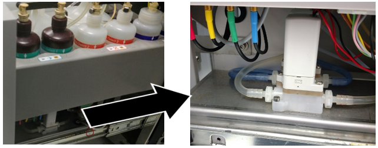
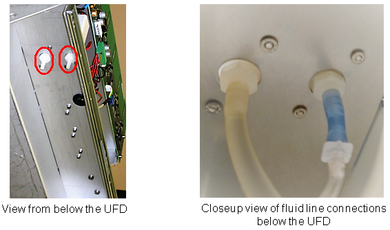

Deactivation and Wash Buffer Solenoid Valve Position Swap
This procedure applies to Panther Systems 2090003132 and above.
Parts and Materials Required
- Lab Tape
- Absorbent spill-protection pads
- Allen wrench, 2.5mm
- Allen wrench, 3.0mm
- 2x UFD, WASH SLNOID BARB FITTING (set of 5)
- UFD, A/B BOTTLE VALVE 4 WASH&DEACT
Time Required
- 30 minutes
Procedure
- Power down the Panther System.
- Place spill protection pads below the work area.
 Open the Universal Fluid Drawer (UFD) and locate the solenoid valves.
Open the Universal Fluid Drawer (UFD) and locate the solenoid valves.

Note—When viewed from the right hand side of the UFD, the Deactivation Buffer Solenoid Valve is behind the Wash Buffer Solenoid Valve. 
- Disconnect the Wash and Deactivation Buffer lines at the quick connect fittings on the bottles to avoid excess spillage.
- ONE AT A TIME disconnect and clearly label each fluid line that connects to their respective valves from underneath the UFD.

- Remove the UFD door by removing the three 3mm screws from the sides of the Universal Fluid Drawer.
- Remove the bottles in the AD1AD2/Oil bottle tray.
- Lift and prop the emptied bottle tray.
- Disconnect the ribbon cable on the right side of the UFD PCB (white arrow below).
- Remove the 5 screws (black arrows below) holding the UFD PCB.
- Gently lower the PCB and allow it to hang as shown in the photo below.
- Using a 2.5mm Allen wrench, remove ONLY the two lower screws that secure each solenoid valve to the mounting plate.
Note—For each solenoid valve remove ONLY the two recessed hex socket screws (arrows shown in the following photo).
DO NOT REMOVE the two Philips head screws.
- With both solenoids unfastened from the Universal Fluid Drawer mark each valve to indicate which is used for Wash Buffer and which is for Deactivation Buffer.
Note—There is no need to disconnect the remaining two fluid lines or wire leads of the solenoids.
You may need to feed some slack in the fluid lines in order to have enough play in the lines to more easily move the solenoids.
- You are now ready to swap the positions of the two solenoids.
- Reposition the Wash Buffer Solenoid Valve to the rear position and use two of the hex screws to secure it to the Universal Fluid Drawer.
- The Deactivation Buffer Solenoid Valve that was previously at the rear can now be secured into the front position using the two remaining hex screws.
- Reconnect the fluid lines that connect to the valves from beneath the UFD making sure to check the labeling to ensure that each line goes to the correct valve.
- Raise and secure the UFD PCB with the five screws removed earlier.
- Reconnect the ribbon cable to the UFD PCB.
- Place and secure the AD1AD2/Oil bottle tray into position.
- Place and reconnect all bottles.
- Mount and secure the UFD door, adjusting it as needed for a flush and aligned fit.


Verification
- Start up the Panther System and Prime Operation of pumping fluid through tubing to ensure proper and consistent fluid delivery (remove air from the tubing, etc.). the system.
- Inspect for leaks around the solenoid fittings.
 button at the top of the page to send feedback, comments, or change requests.
button at the top of the page to send feedback, comments, or change requests.